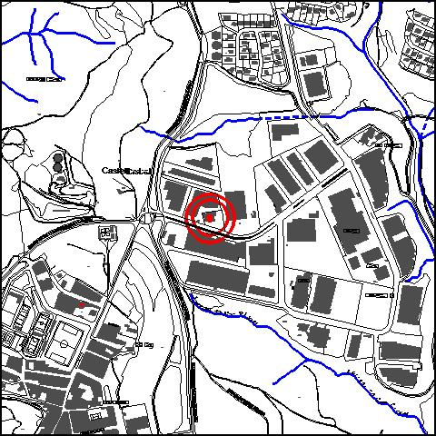

|  |
|
Nom de l’element: Can Riquer
Clau d’identificació: A.12
Nucli o indret: Pol. Ind. Compte de Sert (Av. Can Campanyà núm. 5).
UTM: X= 415.343, Y= 4.592.955, 158,70 m snm.
Règim del sòl: sòl urbà.
1.1. Època de construcció i tipologia:
Antiga masia dedicada a l’agricultura. Actualment està formada per un cos principal de planta baixa i planta pis destinat a vivenda, un magatzem i diversos cossos en desús. Els murs són de mamposteria i la coberta, a dues aigües, de fusta i teula. Les façanes han estat reformades.
1.2. Estat de conservació:
Molt bo. Presenta tots els elements estructurals en bon estat de conservació, excepte les façanes, que presenten un estat mitjà de conservació.
1.3. Ús actual:
Habitatge.
1.4. Accés:
Accés fàcil des de l’Av. de Can Campanyà.
Antiga masia dedicada a l’agricultura, envoltada pel P.I. Compte de Sert.
3.1. Usos admesos:
Unihabitatge, residencial, hoteler (excepte aparthotel; i amb un màxim de 30 places), oficines i serveis, educatiu, recreatiu cultural i social, recreatiu de restauració, esportiu.
3.2. Condicions d’ordenació:
Pla Especial a redactar.
3.3. Accés i serveis:
Accés des de l’Av. de Can Campanyà.
BCIL (Bé Cultural d’Interes Local)